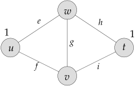
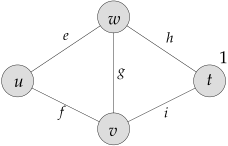
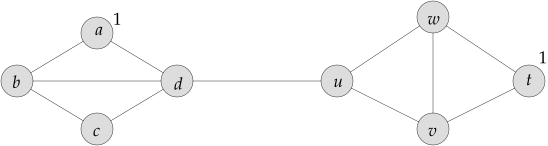
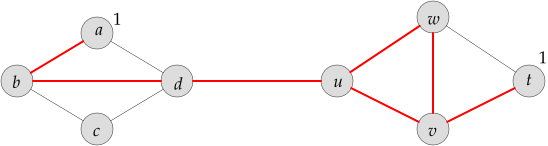
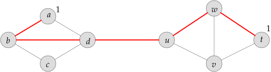
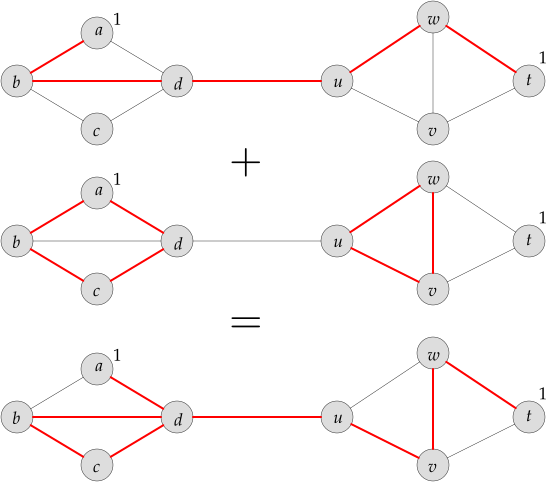
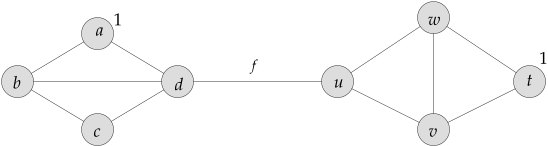

1.1 Definitions./course2/wly/01/01-Tseitin-formulas.wly:2:11
1.1 Definitions./course2/wly/01/01-Tseitin-formulas.wly:2:11
Definition 1.1.1 (Tseitin formulas)../course2/wly/01/01-Tseitin-formulas.wly:3:5 ./course2/wly/01/01-Tseitin-formulas.wly:4:30 Let ./course2/wly/01/01-Tseitin-formulas.wly:5:9$G = (V,E)$./course2/wly/01/01-Tseitin-formulas.wly:5:13 be an undirected graph and let ./course2/wly/01/01-Tseitin-formulas.wly:5:24$s : V \rightarrow \{0,1\}$./course2/wly/01/01-Tseitin-formulas.wly:5:56,./course2/wly/01/01-Tseitin-formulas.wly:5:83 ./course2/wly/01/01-Tseitin-formulas.wly:5:83 called the ./course2/wly/01/01-Tseitin-formulas.wly:6:9parity requirements./course2/wly/01/01-Tseitin-formulas.wly:6:21../course2/wly/01/01-Tseitin-formulas.wly:6:41 ./course2/wly/01/01-Tseitin-formulas.wly:6:41 The ./course2/wly/01/01-Tseitin-formulas.wly:7:9Tseitin system for ./course2/wly/01/01-Tseitin-formulas.wly:7:14$G$./course2/wly/01/01-Tseitin-formulas.wly:7:33 and ./course2/wly/01/01-Tseitin-formulas.wly:7:36$s$./course2/wly/01/01-Tseitin-formulas.wly:7:41 is a system of linear equations./course2/wly/01/01-Tseitin-formulas.wly:7:45 over ./course2/wly/01/01-Tseitin-formulas.wly:8:9$GF(2)$./course2/wly/01/01-Tseitin-formulas.wly:8:14 with one variable ./course2/wly/01/01-Tseitin-formulas.wly:8:21$x_e$./course2/wly/01/01-Tseitin-formulas.wly:8:40 for each ./course2/wly/01/01-Tseitin-formulas.wly:8:45$e \in E$./course2/wly/01/01-Tseitin-formulas.wly:8:55 and a constraint./course2/wly/01/01-Tseitin-formulas.wly:8:64 ./course2/wly/01/01-Tseitin-formulas.wly:9:9$c_u$./course2/wly/01/01-Tseitin-formulas.wly:9:9 for each ./course2/wly/01/01-Tseitin-formulas.wly:9:14$u \in V$./course2/wly/01/01-Tseitin-formulas.wly:9:24:./course2/wly/01/01-Tseitin-formulas.wly:9:33
Example 1.1.2./course2/wly/01/01-Tseitin-formulas.wly:13:5 ./course2/wly/01/01-Tseitin-formulas.wly:13:5 Let us consider./course2/wly/01/01-Tseitin-formulas.wly:14:9 the following system of four equations on five variables defined./course2/wly/01/01-Tseitin-formulas.wly:15:9 by the following graph and parity requirement:./course2/wly/01/01-Tseitin-formulas.wly:16:9

course2/public/img/tseitin/tseitin.ipeVertices without a 1 next to them are considered to have./course2/wly/01/01-Tseitin-formulas.wly:22:9 a parity requirement of ./course2/wly/01/01-Tseitin-formulas.wly:23:9$0$./course2/wly/01/01-Tseitin-formulas.wly:23:33../course2/wly/01/01-Tseitin-formulas.wly:23:36 Let's write the system./course2/wly/01/01-Tseitin-formulas.wly:23:36 of equations:./course2/wly/01/01-Tseitin-formulas.wly:24:9
We write ./course2/wly/01/01-Tseitin-formulas.wly:31:9$e + f$./course2/wly/01/01-Tseitin-formulas.wly:31:18 instead of ./course2/wly/01/01-Tseitin-formulas.wly:31:25$x_e + x_f$./course2/wly/01/01-Tseitin-formulas.wly:31:37 to increase./course2/wly/01/01-Tseitin-formulas.wly:31:48 readability. This system of equations has a solution,./course2/wly/01/01-Tseitin-formulas.wly:32:9 for example./course2/wly/01/01-Tseitin-formulas.wly:33:9
Let's look at the same graph but with different./course2/wly/01/01-Tseitin-formulas.wly:37:9 parity requirements:./course2/wly/01/01-Tseitin-formulas.wly:38:9

course2/public/img/tseitin/tseitin.ipeThe system of equations is as the above,./course2/wly/01/01-Tseitin-formulas.wly:44:9 just the right-hand side of ./course2/wly/01/01-Tseitin-formulas.wly:45:9$c'_u$./course2/wly/01/01-Tseitin-formulas.wly:45:37 is now ./course2/wly/01/01-Tseitin-formulas.wly:45:43$0$./course2/wly/01/01-Tseitin-formulas.wly:45:51:./course2/wly/01/01-Tseitin-formulas.wly:45:54
This system of equations is unsatisfiable. Adding./course2/wly/01/01-Tseitin-formulas.wly:52:9 up all constraints gives us./course2/wly/01/01-Tseitin-formulas.wly:53:9
Every variable occurs twice on the left-hand side;./course2/wly/01/01-Tseitin-formulas.wly:58:9 this is clear since for each edge ./course2/wly/01/01-Tseitin-formulas.wly:59:9$e = \{u,v\}$./course2/wly/01/01-Tseitin-formulas.wly:59:43,./course2/wly/01/01-Tseitin-formulas.wly:59:56 ./course2/wly/01/01-Tseitin-formulas.wly:59:56 the variable ./course2/wly/01/01-Tseitin-formulas.wly:60:9$x_e$./course2/wly/01/01-Tseitin-formulas.wly:60:22 appears in ./course2/wly/01/01-Tseitin-formulas.wly:60:27$c_u$./course2/wly/01/01-Tseitin-formulas.wly:60:39 and ./course2/wly/01/01-Tseitin-formulas.wly:60:44$c_v$./course2/wly/01/01-Tseitin-formulas.wly:60:49 and nowhere else../course2/wly/01/01-Tseitin-formulas.wly:60:54 Modulo 2 the above (\ref{eqn-sum-all-constraints}) reduces./course2/wly/01/01-Tseitin-formulas.wly:61:9 to./course2/wly/01/01-Tseitin-formulas.wly:62:9
which is clearly unsatisfiable../course2/wly/01/01-Tseitin-formulas.wly:66:9
A vector ./course2/wly/01/01-Tseitin-formulas.wly:67:5$\x \in \{0,1\}^E$./course2/wly/01/01-Tseitin-formulas.wly:67:14 can be interpreted as a spanning subgraph./course2/wly/01/01-Tseitin-formulas.wly:67:32 ./course2/wly/01/01-Tseitin-formulas.wly:68:5$G_x = (V,E_x)$./course2/wly/01/01-Tseitin-formulas.wly:68:5 of ./course2/wly/01/01-Tseitin-formulas.wly:68:20$G$./course2/wly/01/01-Tseitin-formulas.wly:68:24 with./course2/wly/01/01-Tseitin-formulas.wly:68:27 ./course2/wly/01/01-Tseitin-formulas.wly:69:5$E_x := \{e \in E \ | \ x_e = 1\}$./course2/wly/01/01-Tseitin-formulas.wly:69:5../course2/wly/01/01-Tseitin-formulas.wly:69:39 This ./course2/wly/01/01-Tseitin-formulas.wly:69:39$\x$./course2/wly/01/01-Tseitin-formulas.wly:69:46 is a solution./course2/wly/01/01-Tseitin-formulas.wly:69:50 to the Tseitin system if and only if the degree of each./course2/wly/01/01-Tseitin-formulas.wly:70:5 ./course2/wly/01/01-Tseitin-formulas.wly:71:5$v \in V$./course2/wly/01/01-Tseitin-formulas.wly:71:5 in ./course2/wly/01/01-Tseitin-formulas.wly:71:14$G_x$./course2/wly/01/01-Tseitin-formulas.wly:71:18 is odd if ./course2/wly/01/01-Tseitin-formulas.wly:71:23$s(v)=1$./course2/wly/01/01-Tseitin-formulas.wly:71:34 and even if ./course2/wly/01/01-Tseitin-formulas.wly:71:42$s(v)=0$./course2/wly/01/01-Tseitin-formulas.wly:71:55../course2/wly/01/01-Tseitin-formulas.wly:71:63
Example 1.1.3./course2/wly/01/01-Tseitin-formulas.wly:72:5 ./course2/wly/01/01-Tseitin-formulas.wly:72:5 Here is a graph with parity requirements:./course2/wly/01/01-Tseitin-formulas.wly:73:9

course2/public/img/tseitin/tseitin.ipeHere is a vector ./course2/wly/01/01-Tseitin-formulas.wly:78:9$\x \in \{0,1\}^E$./course2/wly/01/01-Tseitin-formulas.wly:78:26 that is ./course2/wly/01/01-Tseitin-formulas.wly:78:44not./course2/wly/01/01-Tseitin-formulas.wly:78:54 ./course2/wly/01/01-Tseitin-formulas.wly:78:58 a solution: constraints ./course2/wly/01/01-Tseitin-formulas.wly:79:9$c_u$./course2/wly/01/01-Tseitin-formulas.wly:79:33 and ./course2/wly/01/01-Tseitin-formulas.wly:79:38$c_v$./course2/wly/01/01-Tseitin-formulas.wly:79:43 are violated:./course2/wly/01/01-Tseitin-formulas.wly:79:48

course2/public/img/tseitin/tseitin.ipeThe subgraph below is a solution./course2/wly/01/01-Tseitin-formulas.wly:84:9

course2/public/img/tseitin/tseitin.ipebecause all parity requirements are satisfied. We can./course2/wly/01/01-Tseitin-formulas.wly:89:9 "add subgraphs modulo 2":./course2/wly/01/01-Tseitin-formulas.wly:90:9

course2/public/img/tseitin/tseitin.ipeLet's look again at the graph, and let's call the middle./course2/wly/01/01-Tseitin-formulas.wly:95:9 edge ./course2/wly/01/01-Tseitin-formulas.wly:96:9$f$./course2/wly/01/01-Tseitin-formulas.wly:96:14:./course2/wly/01/01-Tseitin-formulas.wly:96:17

course2/public/img/tseitin/tseitin.ipeEvery solution must have ./course2/wly/01/01-Tseitin-formulas.wly:101:9$x_f = 1$./course2/wly/01/01-Tseitin-formulas.wly:101:34;./course2/wly/01/01-Tseitin-formulas.wly:101:43 every subgraph./course2/wly/01/01-Tseitin-formulas.wly:101:43 corresponding to a solution must contain ./course2/wly/01/01-Tseitin-formulas.wly:102:9$f$./course2/wly/01/01-Tseitin-formulas.wly:102:50../course2/wly/01/01-Tseitin-formulas.wly:102:53 Why?./course2/wly/01/01-Tseitin-formulas.wly:102:53 Let's look at the four vertices ./course2/wly/01/01-Tseitin-formulas.wly:103:9$a,b,c,d$./course2/wly/01/01-Tseitin-formulas.wly:103:41 on the left./course2/wly/01/01-Tseitin-formulas.wly:103:50 and their constraints:./course2/wly/01/01-Tseitin-formulas.wly:104:9
Adding them up (and reducing modulo 2) gives us./course2/wly/01/01-Tseitin-formulas.wly:111:9
because every edge inside ./course2/wly/01/01-Tseitin-formulas.wly:115:9$S = \{a,b,c,d\}$./course2/wly/01/01-Tseitin-formulas.wly:115:35 appears twice./course2/wly/01/01-Tseitin-formulas.wly:115:52 and gets canceled. Edges like ./course2/wly/01/01-Tseitin-formulas.wly:116:9$\{u,v\}$./course2/wly/01/01-Tseitin-formulas.wly:116:39 outside ./course2/wly/01/01-Tseitin-formulas.wly:116:48$S$./course2/wly/01/01-Tseitin-formulas.wly:116:57 ./course2/wly/01/01-Tseitin-formulas.wly:116:60 don't appear at all; edges between ./course2/wly/01/01-Tseitin-formulas.wly:117:9$S$./course2/wly/01/01-Tseitin-formulas.wly:117:44 and ./course2/wly/01/01-Tseitin-formulas.wly:117:47$V \setminus S$./course2/wly/01/01-Tseitin-formulas.wly:117:52 ./course2/wly/01/01-Tseitin-formulas.wly:117:67 appear exactly once. In this example, this is just ./course2/wly/01/01-Tseitin-formulas.wly:118:9$f$./course2/wly/01/01-Tseitin-formulas.wly:118:60../course2/wly/01/01-Tseitin-formulas.wly:118:63
Definition 1.1.4 (Boundary)../course2/wly/01/01-Tseitin-formulas.wly:119:5 ./course2/wly/01/01-Tseitin-formulas.wly:120:22 Let ./course2/wly/01/01-Tseitin-formulas.wly:121:9$G = (V,E)$./course2/wly/01/01-Tseitin-formulas.wly:121:13 be an undirected graph and ./course2/wly/01/01-Tseitin-formulas.wly:121:24$S \subseteq V$./course2/wly/01/01-Tseitin-formulas.wly:121:52 be a set./course2/wly/01/01-Tseitin-formulas.wly:121:67 of vertices. The ./course2/wly/01/01-Tseitin-formulas.wly:122:9edge boundary of ./course2/wly/01/01-Tseitin-formulas.wly:122:27$S$./course2/wly/01/01-Tseitin-formulas.wly:122:44 is./course2/wly/01/01-Tseitin-formulas.wly:122:48
Note that ./course2/wly/01/01-Tseitin-formulas.wly:126:9$\delta(S) = \emptyset$./course2/wly/01/01-Tseitin-formulas.wly:126:19 if and only if ./course2/wly/01/01-Tseitin-formulas.wly:126:42$S$./course2/wly/01/01-Tseitin-formulas.wly:126:58 is the union of./course2/wly/01/01-Tseitin-formulas.wly:126:61 connected components (possible the empty union of zero connected components)../course2/wly/01/01-Tseitin-formulas.wly:127:9
Observation 1.1.5./course2/wly/01/01-Tseitin-formulas.wly:128:5 ./course2/wly/01/01-Tseitin-formulas.wly:128:5 Let ./course2/wly/01/01-Tseitin-formulas.wly:130:9$S \subseteq V$./course2/wly/01/01-Tseitin-formulas.wly:130:13../course2/wly/01/01-Tseitin-formulas.wly:130:29 When we add up the./course2/wly/01/01-Tseitin-formulas.wly:130:29 constraints ./course2/wly/01/01-Tseitin-formulas.wly:131:9$c_u$./course2/wly/01/01-Tseitin-formulas.wly:131:21 for all ./course2/wly/01/01-Tseitin-formulas.wly:131:26$u \in S$./course2/wly/01/01-Tseitin-formulas.wly:131:35,./course2/wly/01/01-Tseitin-formulas.wly:131:44 i.e., when./course2/wly/01/01-Tseitin-formulas.wly:131:44 building ./course2/wly/01/01-Tseitin-formulas.wly:132:9$\sum_{u \in S} c_u$./course2/wly/01/01-Tseitin-formulas.wly:132:18,./course2/wly/01/01-Tseitin-formulas.wly:132:38 we obtain./course2/wly/01/01-Tseitin-formulas.wly:132:38 the equation./course2/wly/01/01-Tseitin-formulas.wly:133:9
Proof As argued in the above example: when an./course2/wly/01/01-Tseitin-formulas.wly:139:9 edge ./course2/wly/01/01-Tseitin-formulas.wly:140:9$f = \{u,v\}$./course2/wly/01/01-Tseitin-formulas.wly:140:14 is completely inside ./course2/wly/01/01-Tseitin-formulas.wly:140:27$S$./course2/wly/01/01-Tseitin-formulas.wly:140:49,./course2/wly/01/01-Tseitin-formulas.wly:140:52 i.e.,./course2/wly/01/01-Tseitin-formulas.wly:140:52 when ./course2/wly/01/01-Tseitin-formulas.wly:141:9$u, v \in S$./course2/wly/01/01-Tseitin-formulas.wly:141:14,./course2/wly/01/01-Tseitin-formulas.wly:141:26 then ./course2/wly/01/01-Tseitin-formulas.wly:141:26$x_f$./course2/wly/01/01-Tseitin-formulas.wly:141:33 appears twice./course2/wly/01/01-Tseitin-formulas.wly:141:38 in the sum over the constraints; if ./course2/wly/01/01-Tseitin-formulas.wly:142:9$f$./course2/wly/01/01-Tseitin-formulas.wly:142:45 lies./course2/wly/01/01-Tseitin-formulas.wly:142:48 completely outside ./course2/wly/01/01-Tseitin-formulas.wly:143:9$S$./course2/wly/01/01-Tseitin-formulas.wly:143:28,./course2/wly/01/01-Tseitin-formulas.wly:143:31 i.e., ./course2/wly/01/01-Tseitin-formulas.wly:143:31$u, v \not \in S$./course2/wly/01/01-Tseitin-formulas.wly:143:39,./course2/wly/01/01-Tseitin-formulas.wly:143:56 then./course2/wly/01/01-Tseitin-formulas.wly:143:56 ./course2/wly/01/01-Tseitin-formulas.wly:144:9$x_f$./course2/wly/01/01-Tseitin-formulas.wly:144:9 doesn't appear at all; if ./course2/wly/01/01-Tseitin-formulas.wly:144:14$f \in \delta(S)$./course2/wly/01/01-Tseitin-formulas.wly:144:41 then./course2/wly/01/01-Tseitin-formulas.wly:144:58 ./course2/wly/01/01-Tseitin-formulas.wly:145:9$x_f$./course2/wly/01/01-Tseitin-formulas.wly:145:9 appears once../course2/wly/01/01-Tseitin-formulas.wly:145:14A\(\square\)
From linear algebra we know (or should know) that a system./course2/wly/01/01-Tseitin-formulas.wly:148:5 of equations ./course2/wly/01/01-Tseitin-formulas.wly:149:5$A \x = \s$./course2/wly/01/01-Tseitin-formulas.wly:149:18 is unsolvable if and only if./course2/wly/01/01-Tseitin-formulas.wly:149:29 there exists a row vector ./course2/wly/01/01-Tseitin-formulas.wly:150:5$\r^T$./course2/wly/01/01-Tseitin-formulas.wly:150:31 with./course2/wly/01/01-Tseitin-formulas.wly:150:37 ./course2/wly/01/01-Tseitin-formulas.wly:151:5$\r^T \cdot A = \mathbf{0}$./course2/wly/01/01-Tseitin-formulas.wly:151:5 and ./course2/wly/01/01-Tseitin-formulas.wly:151:32$\r^T \cdot \s = 1$./course2/wly/01/01-Tseitin-formulas.wly:151:37../course2/wly/01/01-Tseitin-formulas.wly:151:56 ./course2/wly/01/01-Tseitin-formulas.wly:151:56 In our case, where everything is modulo 2, the./course2/wly/01/01-Tseitin-formulas.wly:152:5 product ./course2/wly/01/01-Tseitin-formulas.wly:153:5$\r \cdot A$./course2/wly/01/01-Tseitin-formulas.wly:153:13 just means selecting a subset ./course2/wly/01/01-Tseitin-formulas.wly:153:25$S$./course2/wly/01/01-Tseitin-formulas.wly:153:56 of./course2/wly/01/01-Tseitin-formulas.wly:153:59 constraints and adding them up, by setting ./course2/wly/01/01-Tseitin-formulas.wly:154:5$S := \{v \in S \ | \ r_v = 1\}$./course2/wly/01/01-Tseitin-formulas.wly:154:48../course2/wly/01/01-Tseitin-formulas.wly:154:80 ./course2/wly/01/01-Tseitin-formulas.wly:154:80 By ./course2/wly/01/01-Tseitin-formulas.wly:155:5Observation 1.1.5 ./course2/wly/01/01-Tseitin-formulas.wly:155:5 this means that./course2/wly/01/01-Tseitin-formulas.wly:156:5
The first equation implies that ./course2/wly/01/01-Tseitin-formulas.wly:161:5$S$./course2/wly/01/01-Tseitin-formulas.wly:161:37 is a union of./course2/wly/01/01-Tseitin-formulas.wly:161:40 connected components; the second one says that the./course2/wly/01/01-Tseitin-formulas.wly:162:5 number of vertices in ./course2/wly/01/01-Tseitin-formulas.wly:163:5$S$./course2/wly/01/01-Tseitin-formulas.wly:163:27 that have parity requirement 1./course2/wly/01/01-Tseitin-formulas.wly:163:30 is odd. From this it follows that there is at least./course2/wly/01/01-Tseitin-formulas.wly:164:5 one connected component ./course2/wly/01/01-Tseitin-formulas.wly:165:5$S'$./course2/wly/01/01-Tseitin-formulas.wly:165:29 with an odd number./course2/wly/01/01-Tseitin-formulas.wly:165:33 of parity-requirement-1 vertices:./course2/wly/01/01-Tseitin-formulas.wly:166:5
Lemma 1.1.6./course2/wly/01/01-Tseitin-formulas.wly:167:5 ./course2/wly/01/01-Tseitin-formulas.wly:167:5 The Tseitin./course2/wly/01/01-Tseitin-formulas.wly:168:9 system is satisfiable if and only if./course2/wly/01/01-Tseitin-formulas.wly:169:9 every connected component has an even number of vertices./course2/wly/01/01-Tseitin-formulas.wly:170:9 with parity requirement ./course2/wly/01/01-Tseitin-formulas.wly:171:9$1$./course2/wly/01/01-Tseitin-formulas.wly:171:33../course2/wly/01/01-Tseitin-formulas.wly:171:36
Proof The ./course2/wly/01/01-Tseitin-formulas.wly:174:9only if./course2/wly/01/01-Tseitin-formulas.wly:174:14 direction is clear: if a connected./course2/wly/01/01-Tseitin-formulas.wly:174:22 component ./course2/wly/01/01-Tseitin-formulas.wly:175:9$S$./course2/wly/01/01-Tseitin-formulas.wly:175:19 has an odd number of parity-1-vertices, then./course2/wly/01/01-Tseitin-formulas.wly:175:22 adding up the constraints ./course2/wly/01/01-Tseitin-formulas.wly:176:9$c_u$./course2/wly/01/01-Tseitin-formulas.wly:176:35 for all ./course2/wly/01/01-Tseitin-formulas.wly:176:40$u \in S$./course2/wly/01/01-Tseitin-formulas.wly:176:49 ./course2/wly/01/01-Tseitin-formulas.wly:176:58 gives us ./course2/wly/01/01-Tseitin-formulas.wly:177:9$0=1$./course2/wly/01/01-Tseitin-formulas.wly:177:18,./course2/wly/01/01-Tseitin-formulas.wly:177:23 so the system is clearly unsatisfiable../course2/wly/01/01-Tseitin-formulas.wly:177:23
For the ./course2/wly/01/01-Tseitin-formulas.wly:179:9if./course2/wly/01/01-Tseitin-formulas.wly:179:18 part we can use the linear algebra./course2/wly/01/01-Tseitin-formulas.wly:179:21 reasoning from above; or we can prove it directly:./course2/wly/01/01-Tseitin-formulas.wly:180:9 First, if ./course2/wly/01/01-Tseitin-formulas.wly:181:9$G$./course2/wly/01/01-Tseitin-formulas.wly:181:19 has multiple connected components, we can./course2/wly/01/01-Tseitin-formulas.wly:181:22 construct a solution for each component separately../course2/wly/01/01-Tseitin-formulas.wly:182:9 So let's assume that ./course2/wly/01/01-Tseitin-formulas.wly:183:9$G$./course2/wly/01/01-Tseitin-formulas.wly:183:30 is connected../course2/wly/01/01-Tseitin-formulas.wly:183:33 Let us look at the vertices of parity requirement 1 and./course2/wly/01/01-Tseitin-formulas.wly:184:9 call them./course2/wly/01/01-Tseitin-formulas.wly:185:9
By assumption, ./course2/wly/01/01-Tseitin-formulas.wly:189:9$l$./course2/wly/01/01-Tseitin-formulas.wly:189:24 is even. We put them in pairs:./course2/wly/01/01-Tseitin-formulas.wly:189:27
For each such pair ./course2/wly/01/01-Tseitin-formulas.wly:193:9$(v_{2i-1}, v_{2i})$./course2/wly/01/01-Tseitin-formulas.wly:193:28 we./course2/wly/01/01-Tseitin-formulas.wly:193:48 find a path ./course2/wly/01/01-Tseitin-formulas.wly:194:9$p$./course2/wly/01/01-Tseitin-formulas.wly:194:21 between them; this exists because ./course2/wly/01/01-Tseitin-formulas.wly:194:24$G$./course2/wly/01/01-Tseitin-formulas.wly:194:59 ./course2/wly/01/01-Tseitin-formulas.wly:194:62 is connected by assumption. We consider ./course2/wly/01/01-Tseitin-formulas.wly:195:9$p$./course2/wly/01/01-Tseitin-formulas.wly:195:49 as a subgraph./course2/wly/01/01-Tseitin-formulas.wly:195:52 of ./course2/wly/01/01-Tseitin-formulas.wly:196:9$G$./course2/wly/01/01-Tseitin-formulas.wly:196:12../course2/wly/01/01-Tseitin-formulas.wly:196:15 We take ./course2/wly/01/01-Tseitin-formulas.wly:196:15$l/2$./course2/wly/01/01-Tseitin-formulas.wly:196:25 such paths, connecting./course2/wly/01/01-Tseitin-formulas.wly:196:30 each pair. Then we "add up the paths" as described above./course2/wly/01/01-Tseitin-formulas.wly:197:9 and obtain a subgraph that satisfies all constraints../course2/wly/01/01-Tseitin-formulas.wly:198:9A\(\square\)